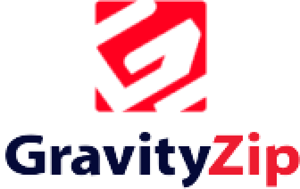
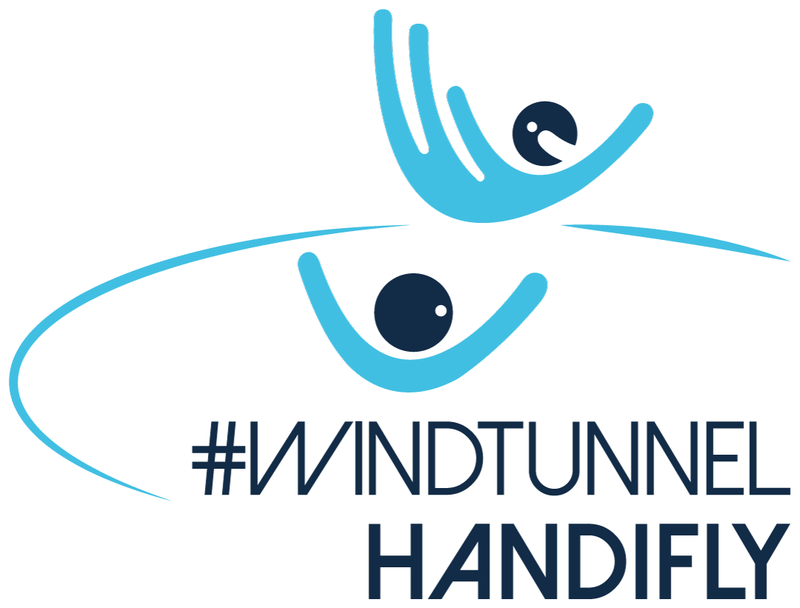

Rebecca Girigalla
FounderI came to skydiving and the wind tunnel after Covid brought on histamine intolerance, and I spent 1 year and 4 months bedridden. I started training a few months after I could walk. Flying changed my life.
On 3 December 2026, 100 differently abled children will fly in a wind tunnel in Hyderabad, and for many of them it will be the first time they discover that their body can fly.
3 December 2026 · GravityZip wind tunnel · Hyderabad, Telangana
Image created with Midjourney
Each child will be held safely in the air by certified instructors inside a vertical wind tunnel at GravityZip. A wind tunnel is a safe, controlled place where anyone can try indoor skydiving, and in the air the wind holds the body up, not the legs, the arms or a wheelchair, so for a few minutes each child feels weightless and free and learns to move in a new element.
The children are chosen together with special schools, rehabilitation centres and organisations that work with them, and each child comes with a parent, teacher or caregiver. During the day they will also meet amputee skydivers and other people who have achieved the impossible, and hear their stories.
Made to fly, in every way
Some things change how you see yourself, and flying is one of them. At Everyone Flies, young people of all abilities step into the wind tunnel and fly, many for the first time. They're supported by expert instructors, but the flight is theirs. We hope each child walks out with a new sense of their own power, and the confidence to go after whatever they dream of.
differently abled children will fly on 3 December 2026.
people with disabilities have flown in wind tunnels across Europe through Windtunnel Handifly.
of Handifly participants rated the experience very positive in the programme's 2022 evaluation.
Children with disabilities take part in sport less than other children, often because activities are not adapted and equipment is costly. When they do take part, research links sport with a stronger belief in what they can do and with higher self-esteem, although researchers note that more study is needed to show exactly how. The United Nations adds that sport brings people with and without disabilities together, which shifts assumptions about what is possible, and Article 30 of the UN Convention on the Rights of Persons with Disabilities says that every child has an equal right to play, recreation and sport.
Flying gives a child proof, in their own body, of something they were never sure they could do.
Parents, teachers and friends watch a child fly and see a flyer, and that way of seeing them stays long after the day.
Meeting people who have done the impossible shows children that adventure does not end with adversity.
Indoor skydiving, also called bodyflight, lets you feel the freefall of a skydive without a jump or a parachute. A powerful fan pushes air upward through an enclosed vertical tunnel, and a person lying on that stream of air is lifted off the floor and floats in the wind.
The sport began as a way for skydivers to train and has grown into a discipline of its own, enjoyed by children, adults and people of every ability.
Everything happens inside a controlled tunnel where the wind does the lifting, so there is no height to fear and no equipment to manage in the air.
Instructors hold beginners steady and show them how to relax into the air, while an operator at the console sets the wind speed for each flyer.
Because the wind holds the body up, people with many different abilities can fly, which is what Windtunnel Handifly has shown across Europe.
Each child arrives with a parent, teacher or caregiver, and accessible transport is arranged for children who use wheelchairs.
A 15-minute briefing and properly fitted gear help every child feel ready before the first flight.
One or two certified instructors hold each child safely in the air while an operator controls the fan speed.
The children talk with amputee skydivers and others who have achieved the impossible, and a simple talk explains how the tunnel works.
Every child leaves with a flight certificate, an embossed wristband, photos and a short clip of their flight.
On the day, the children will not only fly, they will spend time with amputee skydivers and others who have achieved what many thought was out of reach. These are people who have been where the children are, and who can show, simply by being there, what is possible.
Each speaker shares their own story in simple words, about the day things changed, what they were told they could not do, and how they did it anyway.
Children, parents and teachers can ask questions, and no question is too small, from how a prosthetic leg works to what it feels like to fall through the sky.
The speakers stay with the children between flights, so conversations, photos and friendships can happen naturally, on the same floor and at the same eye level.
Everyone Flies gives the International Day of Persons with Disabilities a moment of joy and achievement that children, families and the public will remember.
Everyone Flies puts the Rights of Persons with Disabilities Act, 2016 into practice, in the spirit of Section 30, which encourages the participation of persons with disabilities in sport and the organisation of disability-specific sporting events.
Windtunnel Handifly, led by the French Parachuting Federation with EU Erasmus+ support, has brought more than 1,100 people with disabilities into wind tunnels across Europe. In its evaluation, 88% of participants rated the experience very positive, and 63% of first-time flyers had not known that tunnel flying was open to people with disabilities.
With the right support, Everyone Flies can grow into a model for inclusive adventure sport at wind tunnels across the country.
I came to skydiving and the wind tunnel after Covid brought on histamine intolerance, and I spent 1 year and 4 months bedridden. I started training a few months after I could walk. Flying changed my life.
Havildar Ajay Kumar is a 5 Para (Special Forces) veteran of the Indian Army and a below-knee amputee who has turned adversity into adventure. Before his leg amputation he was a skydiver and sport climber. Today he continues as a mountaineer, scuba diver and marathon runner, and he is a national medallist in shooting, always pushing the limits of what is possible after injury. He has created a world record by trekking to the world's highest battlefield on the Siachen Glacier, together with the Indian Army and Operation Blue Freedom Foundation.
Shyam is an amputee skydiver and paragliding pilot. He entered the International Book of Records as the youngest person to complete a solo skydive from the highest altitude with a prosthetic leg, jumping from 13,000 feet.
More about Ashik will be added here soon.
Praharsha is an Indian defence technology entrepreneur, a geospatial specialist and the founder of AerialCarto.
Students and professionals will join the Ground Crew on the day, and you can sign up to help.
Windtunnel Handifly is Europe's wind tunnel programme for people with disabilities, led by the French Parachuting Federation (FFP) and running since 2016. It guides our plan with the experience of more than 1,100 flyers.
A former Indian Army officer who served in 21 Para (Special Forces) and as a military free-fall instructor, he completed 30 years in the military and is now Chief Instructor and mentor at Skyhigh India, where he leads civilian skydiving training and operations. He has made more than 4,000 tandem jumps and holds FAA Senior Parachute Rigger credentials.
We are inviting more advisors from sport, disability and medical care to join the Flight Council.

GravityZip hosts the day at its wind tunnel in Hyderabad, with the venue and facilities free of charge and a reduced tunnel price for every child.

The French Parachuting Federation's programme shares its guidance and resources with us and has allowed us to use the Handifly logo.
Operation Blue Freedom Foundation brings years of experience in helping people with disabilities take on adventure. It advises the Ground Crew, supports logistics and coordination on the day.
More sponsors are finalising their offers, and we will announce each of them here as it is confirmed.
Become a Tailwind PartnerStudents and professionals are welcome to join the Ground Crew on the day, and we especially need people for general crew, photography, social media and video.
We invite children directly through the special schools, rehabilitation centres and organisations that work with them, so there is no public sign-up. If you work with children who would love to fly, please write to us.
Sponsors can fund a child's flight and share in the story of the day, and journalists are welcome to ask for the press note and for access on 3 December.
Write to us at flying@proj-neptune.com
Join us on 3 December 2026 at GravityZip in Hyderabad, and help every child find out what their body can do.
Get involved